Полиция остановила за веселящий газ
06.11.20
Многие начинающие любители веселящего газа переживают, что их машину остановят с баллоном закиси азота, или же просто тормознут на улице с баллоном. Что же делать, если остановила полиция, а у Вас баллон с закисью азота – давайте разберемся. Многие боятся, что представители правоохранительных органов заберут закись и выпишут штраф, а то и вовсе предъявят что-то посерьезнее. На самом деле ничего подобного не будет, ведь закись азота - это не наркотик.
Подробнее
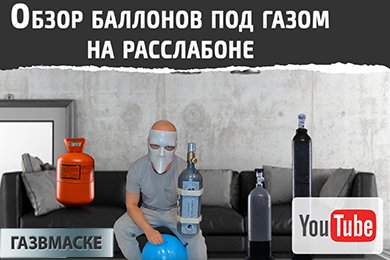
Как действует закись азота на самом деле
05.11.20
Такая тема, как польза и вред употребления пищевой закиси азота путем ингаляции – уже за несколько десятков лет успела обрасти множеством домыслов и мифов, которые далеки от правды, но бытуют как мнение. Для того, чтобы понять как на самом деле действует N2O на организм человека, надо максимально абстрагироваться от всех эмоциональных выдумок, новостей из СМИ и обратиться к самым настоящим и истинным медицинским фактам.
Подробнее
Текст песни Macan веселящий газ
15.10.20
Веселящий газ уже успел навести шороху не только в плане отличного проведения досуга, но и засветиться в творчестве многих музыкальных групп и исполнителей, в частности – рэпер Macan стал известен широкой публике благодаря своему треку «Веселящий газ». Исполнитель не скрывает, что не понаслышке знает про закись азота, а идея сравнить отношения с девушкой и желание употребить шарик-другой веселящего газа пришла ему в голову не спонтанно. Трек стал популярен, а слова песни «Веселящий газ» ищут все чаще и чаще.
Подробнее
Новая фирменная сумка для баллонов
08.10.20
Такая вещь, как сумка переноска для баллонов веселящего газа – это скорее необходимость, чем излишество. Она позволяет удобно доставить даже большой баллон без особого труда из пункта «А» в пункт «Б» равномерно распределяя нагрузку на спину и не доставляя хлопот. Согласитесь, нести большой баллон в руках неудобно, он так и норовит выскочить из рук и удариться об пол, что небезопасно. Наши сумки от компании «Газ в маске» - это прочные и надежные, а также удобные помощники в вопросе переноски баллона как с поднятием на этаж, так и просто в рамках прогулки.
Подробнее
Попперс Voodoo
07.10.20
С древних времен люди за помощью в любом вопросе обращались к шаманам, они помогали в любых аспектах жизни и дельным советом или заклинанием. Но времена изменились и люди перестали верить в волшебные действия колдунов и стали мыслить рационально, однако до сих пор находятся вещи, которые либо необъяснимы, либо их действие столь же похоже на чудо, как и последствия работы шамана. Попперс Voodoo, что переводится на русский язык как обозначение шамана или колдуна – это средство, которое поистине имеет самое чудесное воздействие на привычную интимную близость.
Подробнее
Попперс Lady
01.09.20
Эволюция попперсов уже достаточно долго идет в сторону индивидуализации воздействия – то есть по сути для каждого вида секса или настроения можно подобрать свой препарат. Попперсы действуют сразу на обоих партнеров при применении – и на мужчину и на женщину в одинаковой степени, но сделать первый женский попперс удалось французам – людям, которые знают о занятии любовью если не все, то очень многое.
Подробнее
Веселящий газ на пикнике
06.08.20
Пикник на природе – это, пожалуй, самое лучшее что может произойти летом в плане отдыха. Мы берем с собой мангал, закуски, музыку и многое другое и отправляемся искать место получше. Ваш пикник может проходить на природе, в парке, на берегу реки, в ближайшей посадке или лесополосе - неважно, настроение в любом случае будет на позитиве. Стоит ли брать веселящий газ с собой на пикник – ответ точно положительный, ведь небольшой баллон не отяготить Вас в пути к месту назначения, а купив у нас сумку переноску для баллонов Вы и вовсе сможете взять большую тару с веселящим газом для себя и всех своих друзей.
Подробнее
Можно ли обдышаться веселящим газом
05.08.20
В любом занятии нужно знать меру, особенно если она касается Вашего состояния. Вполне резонный вопрос – можно ли обдышаться веселящим газом и что будет, если выдуть слишком много шариков. Одним словом – что будет если вызвать передозировку и вообще может ли она наступить. Вопрос достаточно интересный, поскольку каждому человеку нужно свое количество веселящего газа и то, как воздействует закись азота на конкретно взятый организм зависит от многих факторов.
Подробнее
Как надувать шары веселящим газом
03.08.20
Все любители подышать веселящим газом умеют надувать шары из баллона, но не все могут делать это правильно. Как же правильно надувать шары веселящим газом из баллона и делать это с минимальными потерями закиси и самих шариков – давайте разбираться. Для начала стоит упомянуть про самое главное правило – никогда не надувайте шарик из лежачего баллона – он покроется инеем и обморозит Вам пальцы. Все дело в особенностях хранения газа в баллонах и самой закиси.
Подробнее
Попперс Fetish
29.07.20
Учитывая обилие попперсов на рынке и индивидуальное воздействие их на организм достаточно сложно точно сопоставить все факты и сказать, что вот такой попперс будет воздействовать вот таким образом, а другой – по-другому. Однако, в любом случае мы всегда можем рассказать Вам как именно тот или иной попперс воздействует на большинство людей. Сегодня речь пойдет о попперсе Fetish, канадском препарате, который достаточно недавно появился на рынке и набирает популярность. Начать стоит с объема пузырька и мощности – объем типичный канадский, 10 миллилитров, а мощность 2 единицы из 3 возможных.
Подробнее
Летний отпуск и веселящий газ
08.07.20
Настала пора самых жарких летних отпусков и отдыха, но к величайшему сожалению все границы закрыты и выбраться практически не представляется возможным. Но даже в такой ситуации можно найти свои плюсы, ведь в путешествиях по России можно не пересекать границ, а значит смело брать с собой на отдых баллон-другой хорошего веселящего газа от нашей компании «Газ в маске». Как это так, спросите Вы – а мы ответим – легко.
Подробнее
Попперс Diablo
07.07.20
Что представляет собой попперс Diablo – лучше всего сможет описать его название, а точнее сказать перевод, ведь Diablo на целом ряде языков означает «дьявол». Именно истинный дьявол может вселиться в того, кто примет данный попперс, поскольку он супер мощный и по нашей классификации составляет аж 3 единицы из 3 возможных. Что же отличает его ото всех остальных кроме мощности – давайте разбираться. Для начала стоит отметить, что попперс Diablo, как и все французские попперсы является по объему более выгодным вариантом за те же деньги – 13 миллилитров против 10 у британцев и французов, а это уже интересно.
Подробнее
Попперс Rush
06.07.20
Такой попперс, как Rush является достаточно известным среди поклонников данных препаратов и весьма успешен на рынке. Скорее всего даже если Вы впервые увидели попперс на картинке рекламы или в магазине – это почти наверняка будет именно попперс Rush и это не удивительно. Он был практически монополистом достаточно долгое время, этот англичанин в буквальном смысле целая эпоха попперсов, которая, между прочим, началась отнюдь не вчера. Раш, скажем так, законодатель моды.
Подробнее
Попперс Buzz
03.07.20
Среди множества попперсов и обилия их выбора достаточно несложно распознать настоящие сокровища, именно к таким и относится британский попперс Buzz, причин тому достаточно много. Начать стоит с истории, этот товар давно стал хитом, который покорил не только Британию, но и весь мир. Самая обычная пчелка на упаковке стала узнаваема всеми любителями попперсов, а небольшой и красочный пузырек на 10 миллилитров превратился в хит продаж.
Подробнее
Как человек чувствует себя под веселящим газом
29.05.20
Один из самых частых вопросов, который мы слышим в социальных сетях от новичков – это как же себя чувствует человек под воздействием веселящего газа. Что он ощущает, каково ему и затуманивается ли рассудок. Все дело в том, что любое восприятие очень субъективно, оно основывается только на личных чувствах и эмоциях, а также на отношении к ним. Но все же мы постараемся достаточно точно описать общие факторы, которые присутствую у человека под веселящим газом.
Подробнее
Веселящий газ и попперсы – можно ли смешивать
28.05.20
Рост популярности попперсов и веселящего газа приблизительно в одно время спровоцировал возможность их совместного употребления, да и если только посчитать – запросов о совместимости и того и другого товара с другими веществами стали достаточно частыми. Мы уже упомянули про то, стоит ли смешивать веселящий газ с курением или употреблением алкоголя, а поскольку наша компания «Газ в маске» предлагает и попперсы и веселящий газ – то давайте рассмотрим подробнее употребление этих веществ одновременно.
Подробнее
Почему замерзает шарик от веселящего газа
27.05.20
Как и в любом другом деле – употребление веселящего газа требует опыта, который иногда дается ценой проб и ошибок, потерей газа, проблемами с редуктором или самим баллоном и прочими маленькими неприятностями. Именно поэтому мы и публикуем данные статьи и видео – чтобы помочь Вам избежать ошибок. Сегодня мы рассмотрим вопрос наполнения шарика закисью азота, а если быть точнее – разберемся по какой причине замерзает шарик. Итак, Вы получили от курьера баллон, шарики и хотите порадовать друзей, начали разливать газ по шарикам – а они покрываются инеем.
Подробнее
Какой баллон веселящего газа взять с собой
26.05.20
Во всем достаточно большом выборе баллонов веселящего газа исходя из объема баллонов достаточно легко выбрать такой, который можно просто и без проблем взять с собой практически куда угодно. Но сегодня мы рассмотрим битву за право называться самым компактным два варианта – баллон низкого давления на 3,5 литра и баллон высокого давления на 2 литра. Оба варианта стоят достаточно недорого, примерно в одном ценовом диапазоне, но пройдемся по различиям.
Подробнее
Попперс Fist
08.05.20
Словно мощнейший кулак – попперс Fist не собирается сдавать свои позиции и остается одним из самых популярных вот уже достаточно долгое время, но обо все по порядку. Fist, собственно и переводится, как «кулак», поэтому и начало нашего рассказа об этом хитовом попперсе началось с такой аллегории. Немного истории, ведь это всегда интересно - изначально Фист был анонсирован производителем в виде специального попперса для анального секса, поскольку позволял сильно расслабить мускулатуру гладких мышц и сделать весь процесс менее жестким, но как всегда водится – рынок полюбил его за другое.
Подробнее
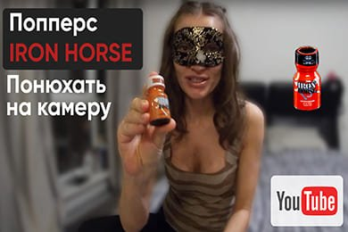
Попперс Iron Horse
07.05.20
Что такое попперсы и в чем их суть и преимущества – мы уже не раз рассказывали, а подробнее о попперсах в целом лучше посмотреть наш специальный раздел. А вот отдельных обзоров на каждый из них у нас еще не было – будем исправляться. Начнем наши обзоры с одного из самых интересных попперсов, который относительно недавно начал покорять рынок и уже успел наделать шума – Айрон Хорс или «Железный конь».
Подробнее
Галлюцинации от веселящего газа
06.05.20
Во многих источниках самой разной литературы и интернета есть указание, что одним из последствий употребления веселящего газа являются галлюцинации – правда ли это и вообще откуда берется такое утверждение, мы и попробуем разобраться. Вообще в целом, человеческий организм – очень сложная система, которая еще до конца не изучена и галлюцинации могут появляться по совершенно неизвестным причинам. Просто некоторые люди склонны к ним, а некоторые – нет.
Подробнее
Панчболлы и шарики для веселящего газа
28.04.20
Придумать что-то лучше шариков и панчболлов для веселящего газа – достаточно трудно, это практически идеальный вариант для распределения газа в индивидуальном порядке для употребления. Но мало кто знает, что шарики бывают разные, и панчболлы немного отличаются от обычных. А дело вот в чем – безусловно, можно использовать и обычные шарики, которые надувают на случай праздников, но они тонкостенные и очень ненадежные и быстро рвутся.
Подробнее
ТОП лучших попперсов в мире
14.04.20
На вкус и цвет, как говорится. Выбирать и строить ТОП в любой сфере – значит делать это не совсем объективно, а исходя из личных предпочтений или предпочтений определенной группы опрашиваемых, но мы все же постараемся максимально объективно сделать ТОП попперсов с учетом того, что чаще всего покупают у нас. Итак, поехали. Если посмотреть на статистику, то можно понять, что популярность есть постоянная, то есть чаще берут те попперсы, которые заслужили уважение уже находясь на рынке долго, а есть раскрученные новинки, которые на волне хорошей рекламы при входе на рынок зарабатывают популярность, которая со временем спадает.
Подробнее
Замена баллонов веселящего газа и бесконтактная доставка
13.04.20
В условиях пандемии и постоянно появляющихся новых случаях заражения коронавирусом наша компания «Газ в маске» уже взяла на вооружение прием бесконтактной доставки. Напомним, что ее принцип в следующем, Вы оплачиваете заказ онлайн и указываете оператору, что требуется именно бесконтактный способ доставки Вашего заказа. Курьер приедет на место и оставит баллон или попперсы у двери, отойдет на 3 метра и позвонит Вам по телефону. Вы заберете товары и курьер проследит получение.
Подробнее
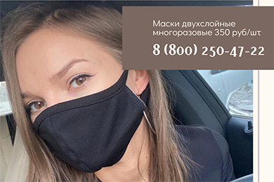
Доставка масок при заказе веселящего газа
07.04.20
Друзья, в связи с тем, что обычные аптеки и прочие учреждения не справляются со спросом на медицинские маски – наша компания «Газ в маске» исходя даже из названия просто не могла пройти мимо данной проблемы и заказала пошив огромного количества двуслойных тканевых масок, которые можно использовать не один раз. Такие многоразовые маски исполняются из приятной на ощупь ткани, которая дышит, а также второго слоя – медицинского, способного задерживать болезнетворные бактерии из воздуха.
Подробнее
Самоизоляция и веселящий газ
31.03.20
С 30 марта 2020 года в Москве введено ограничение на перемещение всех без исключения по возрасту лиц по городу Москве, также аналогичный запрет введен и в области. Но есть и исключения – Вы можете выгуливать собаку не далее чем 100 метров от дома, можете выезжать за продуктами питания, для покупки лекарств, а также по работе, если она связана с доставкой. Именно этот момент мы с Вами и хотели бы обсудить, ведь наша доставка веселящего газа на дом остается на прежних условиях.
Подробнее
Веселящий газ и похудение
18.03.20
Вопрос похудения к лету и на период отпусков всегда волнует всех без исключения, и тех, кто придерживается правил здорового образа жизни и тех, кто любит жить в свое удовольствие. Но все же давайте посмотрим, каким образом веселящий газ помогает похудеть и как использовать его свойства во благо организма не только развлекаясь, но и поддерживая свои формы. Начнем с того, что в веселящем газе есть кислород – он предназначен для того, чтобы вдыхать газ было проще.
Подробнее
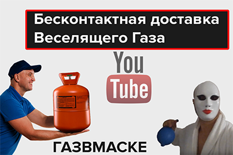
Бесконтактная доставка веселящего газа
17.03.20
Пока коронавирус только начинает шествие по России и все службы готовятся как только могут – мы в компании «Газ в маске» не отстаем и тоже делаем наш город чуть безопаснее. У нас появилась услуга бесконтактной доставки веселящего газа в Москве и области, с ее помощью Вы сможете не контактировать даже с нашим курьером напрямую. В чем же суть данной доставки – давайте разбираться. Для того, чтобы оформить бесконтактную доставку веселящего газа в нашей компании – позвоните по контактному номеру и укажите оператору, что требуется именно такая услуга.
Подробнее
Очередной вброс в СМИ по веселящему газу
11.03.20
Тематика веселящего газа сама по себе весьма терминальная, достаточно часто в СМИ звучат призывы запретить продажу пищевой закиси азота и ее рекламу в интернете, поскольку это, якобы, вредит здоровью. Вот и очередной ролик подоспел с рекламой нашего сайта – мол, заказать закись в Москве не проблема, привезут быстро, но все это очень опасно. Самое интересное – что показывают в видеороликах самых обычных пьяных молодых людей, парней и девушек, которые явно находятся под какими-то психотропными веществами, под чем угодно – но не под закисью азота.
Подробнее
Карантин и доставка веселящего газа на дом
03.03.20
Как всем нам известно, по планете во всю разгулялся коронавирус, он терроризирует более 50 стран, люди боятся выходить из дома и все активнее скупают средства индивидуальной защиты и всевозможные лекарства. Во многих городах введен карантин, доставка занимает все больший рынок – ведь выходить в таких условиях из дома не хочется, а отказывать себе в хорошем настроении – не вариант. Именно в таком случае и спасет вас веселящий газ с доставкой – минимум контактов и максимум позитива!
Подробнее
Веселящий газ и бессмертие
18.02.20
Да, уважаемые посетители и подписчики, такой заголовок сейчас, возможно, и кажется абсурдным, но еще в начале прошлого века он был бы вполне адекватен и на то есть причины. Все дело в том, что около 100 лет назад, когда веселящий газ во многих странах Европы стал популярен, были открыты и его свойства как естественного консерванта. Когда использовали газ на фруктах, овощах и продуктах питания – газ слегка замораживал их и они не портились.
Подробнее
Закись азота – бесконечное веселье
18.02.20
Жаль, что иногда бывает грустно, но это правда жизни. Иногда просто может нахлынуть не только плохое настроение, но и самая настоящая депрессия, и случиться это может по многим причинам. Усталость на работе, тяжелая ситуация со своей второй половинкой, проблемы в бизнесе или просто паталогическая нервотрепка – все это приводит к негативу, ничего не хочется и просто нападает ужасное состояние, которое не дает работать или нормально жить.
Подробнее
Веселящий газ эффект
05.02.20
Эффект от веселящего газа очевиден из названия, но нужно понимать, что для каждого он свой, в зависимости от организма. Начать стоит с того, что употребив веселящий газ он начинает действовать на организм не сразу, а спустя некоторое время. Но также и перестает действовать газ не сразу – после того, как Вы перестаете вдыхать газ организм полностью очищается от воздействия в течение 30-60 минут в зависимости от веса, скорости обмена веществ и многих других факторов.
Подробнее
Лечение веселящим газом
04.02.20
Возможно, это утверждение покажется Вам странным, но лечение веселящим газом – обычная практика в ряде стран. Причем речь идет не о какой-то экспериментальной медицине, а о самом настоящем лечении, давайте разберемся, от каких недугов спасает самая обычная пищевая закись азота. Стоит обратиться к истории одной из первых практик, когда свойства газа были открыты, а сам газ синтезирован в чистом виде.
Подробнее
Сколько веселящего газа купить
23.01.20
Если Вы планируете вечеринку или домашнюю тусовку с веселящим газом, то обязательно нужно посчитать, сколько и каких баллонов закиси потребуется купить. Если планируются небольшие посиделки с друзьями, то на 2-4 человека будет достаточно одного баллона на 2 литра веселящего газа. Если людей планируется до 6, то одного баллона на 5 литров может хватить, но понемногу. Ну а если планируется большая и шумная компания на 8 и более человек – берите большой баллон на 10 литров пищевой закиси азота.
Подробнее
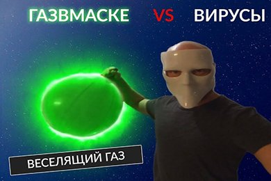
Веселящий газ и вирусы
23.01.20
В условиях распространения всевозможных вирусов зимой все мы хотим уберечься и не подцепить очередную простуду или грипп, не хочется пропускать неделю-две жизни просто из-за этого. Всевозможные лекарства и прививки показывают свою эффективность достаточно выборочно, ведь организм у каждого свой особенный, и нужны универсальные средства. Поднять уровень иммунитета на новую высоту берутся всевозможные препараты для его укрепления, хотя некоторые любители здорового образа жизни действуют по старинке – закаляются, растираются и принимают контрастный душ.
Подробнее
Веселящий газ и здоровье
23.01.20
Вопрос здоровья всегда остро стоял ребром, во все времена. Так, алкоголь полностью запрещен людям со многими болезнями в обычной или хронической форме. Болезни почек и печени, психические расстройства, легочная и сердечная недостаточность – все это лишь небольшой список, когда выпивать спиртное не рекомендуется. Курить не рекомендуется примерно в том же по количеству перечне заболеваний, которые в основном относятся к дыхательной и кровеносной системе.
Подробнее
Веселящий газ на выходные
23.01.20
В нашей стране у людей есть один день недели, когда все желаемое осуществляется – это вечер пятницы. Всю неделю все люди, которые упорно работали – ждали именно этого момента, когда впереди все выходные. Именно в пятницу хочется расслабиться и отдохнуть, выбросить все из головы, развлечься забыв обо всем. Так принято, поэтому и пик заказа веселящего газа всегда приходится именно на выходные, а также на вечер пятницы.
Подробнее
Закись азота и изменения в законодательстве
23.01.20
Совсем недавно в нашей стране, а точнее сказать в правительстве, произошли достаточно серьезные перестановки, о которых не слышал только ленивый. Лишний раз говорить об этом подробно не будем – только рассмотрим как именно может повлиять этот перечень изменений на оборот веселящего газа. Итак, у нас новое правительство, готовится много нововведений, в том числе и в сфере списка веществ, которые уже запрещены или будут запрещены в обороте и употреблении.
Подробнее
Как используют веселящий газ
22.01.20
Сфера применения пищевой закиси азота достаточно широка, а основным потребителем логично является именно пищевая промышленность, но логичный вопрос - как используют веселящий газ. Это и всевозможные пекарни, кондитерские, где газ используется для изготовления крема и сливок. И рестораны со всевозможными кафе, где подаются свежие овощи и газ используется вместо консервантов. И даже для газирования некоторых вод применяется та самая пищевая закись азота, которую используют в качестве веселящего газа.
Подробнее
Опасность китайского веселящего газа
09.01.20
Увы, праздники в нашей стране часто бывают омрачены плохими событиями, не обошлось и в этот раз. Второго января 2020 года около 10 часов утра по Москве в одном из гаражных кооперативов ЮАО Москвы была найдена мертвая девушка 18 лет. Как постановило следствие – едва отметив свое совершеннолетие с друзьями компания молодых людей отправилась в гараж, где как выяснилось впоследствии молодые люди любили побаловать себя дешевым китайским веселящим газом.
Подробнее
Мнение людей о веселящем газе
12.12.19
Статистика – очень упрямая вещь, как говорится в известной фразе, практически ставшей поговоркой. Именно к ней мы и обратимся для того, чтобы понять, как люди реагируют на пищевую закись азота или попросту веселящий газ. Правда ли то, что много негатива или незнающих людей, правда ли что газа опасаются и даже сообщают о нем в полицию – давайте разберемся.
Подробнее
Негативное отношение к веселящему газу
09.12.19
Периодически СМИ вбрасывает в общественное сознание через новости негативную информацию о веселящем газе, его воздействии на организм и о том, что он стал причиной какого-то несчастного случая. Хотя по факту от того же алкоголя реально существуют смертельные случаи по сотне тысяч в год, а его воздействие на организм чрезвычайно негативно. Почему же такая несправедливость, спросите Вы? Все достаточно просто – это выгодно с экономической точки зрения.
Подробнее
Доставка веселящего газа в новогодние праздники
05.12.19
Меньше месяца осталось до одного из самых знаменательных событий и самых длинных государственных праздников – Нового года. Именно эти дни отдыха по всей стране повергают людей в некоторый анабиоз, становится сложнее заказать доставку товара, оплата через банк проходит долго или с задержками, одним словом – наблюдается некоторый коллапс. Но только не с нашей компанией «Газ в маске»!
Подробнее
Предварительный заказ веселящего газа на праздниках
28.11.19
Предпраздничная пора начинается перед новым годом задолго до его наступления, но уже за пару недель непосредственно до события может возникнуть ажиотаж практически на все товары. Заказать доставку чего-либо непосредственно в праздники или за неделю до них становится все сложнее, объем доставок и посылок растет в разы. Веселящий газ не является исключением, ведь он пользуется спросом ничуть не меньше всего остального, а особенно в праздники, когда люди отдыхают.
Подробнее
Веселящий газ как подарок на новый год
27.11.19
Ноябрь еще не успел закончиться, а на прилавках магазинов появились елки и новогодние украшения, поэтому уже пора подумать о новогодних подарках и о том, где и с кем отметить встречу нового года. Как говорится в пословице, не важно где, а важно с кем. Хотя можно было бы поспорить, ну да ладно, это не для нас. Сегодня мы с Вами будем думать на тему предновогодних вечеринок, поры корпоративов, которая тоже уже скоро настанет, а также о том, какой подарок и кому подарить.
Подробнее
Приложение для заказа веселящего газа
08.11.19
Друзья, мы рады Вам сообщить, что теперь не обязательно звонить нам для того, чтобы заказать газ. Мы выпустили приложение для IOS и для Android чтобы Вы могли заказать через него все доступные баллоны газа или обменять их. Также через наше приложение можно заказать попперсы, аксессуары для баллонов и оформить доставку или самовывоз. Кроме всего прочего мы реализовали функцию личного кабинета – зарегистрируйтесь в нем и получайте накопительные скидки за заказы, ведь их история будет доступна Вам.
Подробнее
Какой газ веселящий
06.11.19
Когда новичок сталкивается с веселящим газом впервые, у него может возникнуть целый ряд вопросов, даже начиная с такого, как какой именно газ является веселящим. Итак, какой же газ веселящий – только пищевая закись азота. Не медицинская, не техническая и уж тем более не гелий, как многие привыкли думать. Да-да, сейчас мы говорим из своего опыта, многие новички в данной области были просто уверены, что гелий является веселящим газом.
Подробнее
Подъем баллона на этаж
05.11.19
Баллон с веселящим газом весит достаточно много, условно скажем что хрупкая девушка не сможет транспортировать десятилитровый баллон самостоятельно без посторонней помощи. Однако, небольшие баллоны по 3,5 и 2 литра закиси будут по плечу каждому вне зависимости от уровня физической подготовки. Доставка веселящего газа в Москве осуществляется разными компаниями, но почти ни у кого нет быстрой и круглосуточной доставки баллонов, как в нашей компании «Газ в маске».
Подробнее
Особенности доставки веселящего газа в Подмосковье
01.11.19
Веселящий газ в Подмосковье не менее популярен, чем в самой столице, но доставку здесь осуществляет достаточно немного компаний. Точнее сказать – за пределы МКАД газ из Москвы почти никто не возит. Исключение составляют компании, пользующиеся услугами сторонних курьеров, но в таком случае один-два баллона газа влетает в копеечку. Но данная ситуация далеко не у всех – так наша компания «Газ в маске» рада предоставить Вам удобную, быструю и недорогую доставку веселящего газа в Подмосковье.
Подробнее
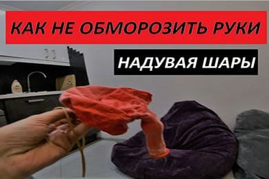
Как не обморозить руки распределяя закись азота
30.10.19
Если Вы хоть раз пробовали заправить шарик закисью азота то наверняка знаете, что если сделать это неаккуратно – можно запросто обморозить пальцы рук. Все дело в том, что веселящий газ находится в баллоне под высоким давлением при пониженной температуре, и даже если сам баллон достаточно теплый, то физические и химические процессы таковы, что при выходе из баллона закись будет очень холодной. Что же делать, если Вы хотите заправить шарики веселящим газом а постоянно обмораживать руки нет никакого желания?
Подробнее
Документы для покупки веселящего газа
22.10.19
Закон суров – но это закон. Именно так говорится в древнеримской мудрости, которая актуальна и по сей день. Мы негодуем, когда нас просят показать паспорт при покупке спиртного или сигарет, хотя закон необходимо соблюдать. Если продавец усомнился в возрасте покупателя – не спешите недовольно гудеть и кидать в него документом, ведь это делается ради общего блага. Еще это значит, что вы хорошо и молодо выглядите.
Подробнее
Спрос на веселящий газ
22.10.19
Веселящий газ был получен относительно давно, почти полторы сотни лет назад. Сразу же он получил высокое распространение и спрос, но был доступен исключительно аристократии – людям с высоким доходом и нужными связями. Ближе к концу 19-го века в Европу и Америку пришли ужасные наркотики вроде опиума, которые буквально отравляли все страны мира, вытеснив почти все, чем люди расслаблялись – алкоголь и сигареты.
Подробнее
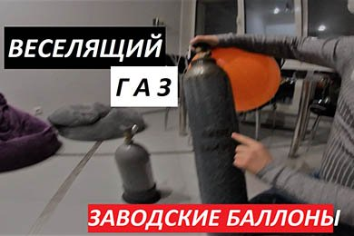
Заводские баллоны веселящего газа
21.10.19
Все баллоны, в которых поставляется веселящий газ доставкой можно разделить не только по типу и объему, но и на заводские и не заводские. Это достаточно просто объяснить, поскольку с завода вся пищевая закись азота поставляется исключительно в баллонах по 10 литров. Это заводская упаковка пищевой закиси азота, если можно так выразиться. Баллоны же в 5, 2 или 3,5 литра – это такой же сертифицированный газ, но сами баллоны используются повторно.
Подробнее
Как дозировать попперс
18.10.19
Попперсы являются относительно новым способом получения наслаждения в сексуальной сфере, поэтому и применение с нужной дозировкой пока применяются не всегда совсем правильно. Иными словами давайте разберемся, как правильно обращаться с маской, попперсом и как правильно дозировать вещество для максимального эффекта. Маска для попперсов – практически идеальный вариант, ведь она освобождает руки для действия, как мы писали ранее, а также правильно дозирует попперс.
Подробнее
Как оплатить веселящий газ
15.10.19
Обилие способов оплаты доставленного товара – это большое преимущество в любой компании, вне зависимости от того, что конкретно доставляется. Именно по этой причине оплатить наш веселящий газ Вы сможете любым удобным Вам способом, начиная от наличных и заканчивая электронными деньгами. В нашей компании действует система оплаты по готовности доставки, то есть Вы оплачиваете товар непосредственно при получении покупки от курьера.
Подробнее
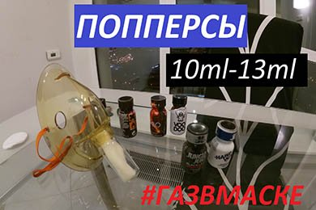
Попперс 10 и 13 миллилитров
14.10.19
Большинство современных попперсов выпускается в пузырьках, они примерно равны по объему, но все же часть производителей предпочитает один объем другому. Так, сегодня на рынке существуют попперсы на 10 и на 13 миллилитров в пузырьке, давайте разберемся, какой выгоднее покупать. Как и во многих других случаях – чем больше упаковка, тем дешевле выходит продукт, поскольку Вы платите за упаковку только один раз и получаете больший объем.
Подробнее
Лучшие курьеры по доставке веселящего газа
09.10.19
Имидж любой компании складывается не только из качества продукта, который они продают, но и качества сервиса. Именно поэтому наша компания «Газ в маске» тщательно следит не только за качеством и сертификацией поставляемого веселящего газа, но и за работой курьеров, водителей и операторов. Ответственный курьер – это имидж компании, залог ответственной и своевременной доставки, а еще это тот человек, который при необходимости сможет помочь с закисью, если Вы заказываете ее впервые.
Подробнее
Шарики бесплатно – всегда
07.10.19
Многие компании, поставляющие веселящий газ клиентам в Москве весьма посредственно организуют уровень сервиса, а иногда и качество газа сильно хромает. Нужно ли лишний раз говорить о наличии или отсутствии сертификатов, это мы уже не раз делали, не будем повторяться. Расскажем лишь о том, какие преимущества Вам может предложить наша компания «Газ в маске».
Подробнее
Веселящий газ от депрессии
01.10.19
Интересно, что само понятие депрессии к нам пришло с запада, у нас же такого заболевания не диагностировалось и не признавалось вплоть до 90-х годов 20 века. Временное психическое расстройство, именуемое депрессией начинается с нервного перенапряжения, в результате длительного стресса и других факторов, она характеризуется тем, что у человека начинается апатия, безразличие к происходящим событиям, нежелание общаться с окружающими.
Подробнее
Кто покупает веселящий газ
27.09.19
Логично, что если есть спрос на услугу или товар – рано или поздно появится и предложение. Чем больше спрос и предложение – тем больше вариантов покупки, выше качество продукта или товара, лучше услуги, поэтому сегодня мы разберемся с вопросом, кто же покупает веселящий газ, то есть кому он требуется. Начнем с физических лиц – розничных заказчиков, которые хотят отдохнуть и развлечься, поэтому заказывают веселящий газ с доставкой на дом.
Подробнее
Медицинская закись и веселящий газ
23.09.19
Вопреки расхожему мнению веселящий газ и медицинская закись азота – это не одно и то же, а два разных вида закиси. Веселящим газом является именно пищевая закись азота, а не медицинская, а употребление второй может вызвать не совсем тот эффект, который Вы планировали. Все в принципе просто, дело в том, что в медицинской закиси азота не такой же состав, не аналогичные добавки и присадки. Начнем с содержания кислорода – оно различается в пищевой и медицинской закиси.
Подробнее
Веселящий газ от плохих воспоминаний
23.09.19
Увы, жизнь не состоит только лишь из положительных моментов, бывают не приятные случаи или даже вовсе трагедии. Все мы по-разному воспринимаем одну и ту же информацию, но особо тяжелые случаи нуждаются в помощи. Воздействие стресса на организм, особенно длительного и продолжительного стресса может привести к депрессии или даже сумасшествию в отдельных случаях, поэтому нужно заставлять себя отвлекаться и расслабляться даже в самых сложных ситуациях и случаях. Не так давно, всего пару лет назад в США было проведено исследование, которое было призвано лечить жесткие негативные воспоминания.
Подробнее
Как не ошибиться в выборе попперса
18.09.19
Мы уже неоднократно говорили про попперсы, какие они бывают и для чего предназначены, а теперь поговорим о таком нелегком деле, как их выбор. Как правильно определиться, чтобы выбрать именно тот, что подходит к определенной задачи, по ситуации да и вообще по восприятию – именно об этом подробнее. Для начала – мощность. Именно ее стоит заранее задать такую, как требуется, ведь есть «единичка» - самый легкий вариант для новичков, середняк для бывалых и хард для тех, кто любит «пожарче».
Подробнее
Веселящий газ в баллончиках
17.09.19
Если Вы являетесь любителем веселящего газа, то почти наверняка видели закись азота не только в больших баллонах, но и маленьких баллончиках – о них и пойдет речь сегодня. Баллончики для веселящего газа размером всего с аналогичные с углекислым газом для пневматических пистолетов, они маленькие и удобные, их хватает на 1 шарик, но есть у них и очень явный, весомый минус. Все дело в том, что практически все баллончики с закисью изготавливаются в Китае и поставляются в Россию и Москву не совсем легально, а качество такого газа может быть не самым высоким.
Подробнее
Доставка попперсов круглосуточно
16.09.19
Круглосуточная доставка – это достаточно большое преимущество для самых нужных товаров, ведь получить в любое время дня и ночи то, что так нужно очень даже большой плюс со всех точек зрения. Круглосуточная доставка попперсов – это буквально очень и очень отличный вариант купить то, что возбуждает Вас и Вашу половинку. По статистике большинство сексуальных актов происходит именно ночью, поэтому и попперсы с круглосуточной доставкой очень востребованы в Москве.
Подробнее
Веселящий газ по акции
05.09.19
Сегодня рынок таков, что тот, кто выставит самый качественный товар по минимальной цене – тот и обеспечит самый хороший спрос на свою продукцию, веселящий газ исключением не стал. Многие продавцы газа предлагают хорошие условия, но постоянные акции в данной сфере – редкость. Можете попробовать позвонить в несколько компаний и узнать – есть ли постоянные скидки, постоянные цены или вообще хоть что-то постоянное, увы, будете неприятно удивлены.
Подробнее
Кислород в пищевой закиси азота
03.09.19
Веселящий газ – это типичный N2O, то есть оксид азота. Но мало кто знает, что в этот газ добавляют определенный процент кислорода. Это делается не просто так, а с определенными целями, к тому же содержание кислорода в закиси не должно превышать определенного процента. Начнем с того, что кислород необходим для того, чтобы вдыхать данный газ было проще – неразбавленным веселящим газом дышать практически невозможно.
Подробнее
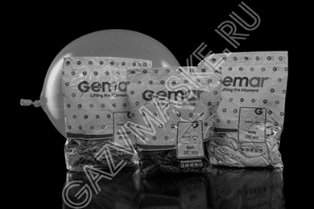
Веселящий газ и аксессуары для баллонов
30.08.19
Не секрет, что именно аксессуары добавляют удобства, с их помощью жизнь становится проще. Употребление пищевой закиси азота не стало исключением – здесь аксессуары упрощают использование баллонов, наполнение газом, его распределение. Существует множество аксессуаров, но мы выделили самые нужные и востребованные, о них и напишем. Начать стоит с транспортировки, ведь большие баллоны достаточно увесистые, к тому же и их транспортировке предъявляют определенные требования.
Подробнее
Попперсы и дженерики
28.08.19
Всевозможные средства для потенции, увеличения сексуального влечения и прочих интимных возможностей на рынке представлены давно, они имеют разную природу и силу, а также разное назначение. Для женщин и для мужчин, для возбуждения или для продления, для всего, что только можно придумать. Дженерики на нашем рынке появились давно, достаточно вспомнить знаменитую «Виагру», которая стала нарицательным именем для всех препаратов в целом, ей пользуется большое количество мужчин.
Подробнее
Аренда баллона веселящего газа 10 литров
16.08.19
Приобретая пищевую закись азота Вы, как ее истинный ценитель или фанат, сталкиваетесь с проблемой накопления тары – пустых баллонов. Безусловно, в большинстве компаний организовывают выкуп пустых баллонов из-под веселящего газа, кто-то предлагает хороший обменный курс, но никто не застрахован от такого момента, когда пустых баллонов просто-напросто перебор на рынке. Что делать, ведь они занимают место, причем достаточно много, а пустые квадратные метры в столице сегодня на вес золота.
Подробнее
Кто продает веселящий газ в Москве
14.08.19
С того момента, как веселящий газ приобрел новый виток популярности в начале десятых годов – продавать его стало выгодным делом, поэтому почти каждый клуб или ночное заведение принялось закупать газ пищевой закиси азота просто партиями, в больших количествах. Продажей газа для заведений, как и для физических лиц стали заниматься компании, которые изготавливали газ кустарным способом или закупали оптом низкопробный из Китая, который также своевременно среагировал на повышение спроса.
Подробнее
Является ли веселящий газ наркотиком
14.08.19
Учитывая ажиотаж вокруг веселящего газа в последнее время в СМИ и в обществе стал достаточно популярен запрос – является ли веселящий газ наркотиком. Для этого нужно разобраться, для начала, что конкретно называют наркотиком. К данным веществам относятся психотропные и подобные им препараты, вызывающие искажение реальности, восприятия действительности и неадекватное поведение вследствие употребления, а также привыкание и негативное воздействие на нервную систему.
Подробнее
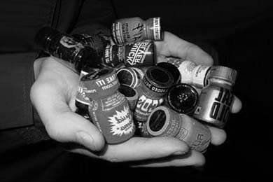
Производители попперсов в мире
06.08.19
В современном мире достаточно много способов разнообразить свой досуг и в том числе это касается и интимной жизни. Если Вам кажется, что в этом аспекте уже все поднадоело, все испробовано или просто не интересно, то можно прибегнуть ко всяким игрушкам, ролям и одеждам, но ничего не заменит именно психологии – получения новых эмоций. Именно в этой сфере и помогают попперсы, они придают новые краски сексуальным отношениям, действуя на ощущения и превращая их в самую настоящую сказку.
Подробнее
Веселящий газ и алкоголь
30.07.19
Если алкоголь известен нам уже с самой зари времен, и его действие на организм предсказуемо в 90 процентах случаев – то веселящий газ в глазах большинства является «темной лошадкой», которая многих пугает. Однако, это далеко не так, ведь и веселящий газ не новичок в сфере развлечений и «проветривания мозгов», он известен уже почти две сотни лет. Он также немного опьяняет, вводит в легкую эйфорию как малая доза алкоголя, заставляет от души посмеяться и не вводит в похмелье, от него не болит голова и не мутит на утро.
Подробнее
Почему закись азота продается с 18 лет
24.07.19
В любой продукции могут быть ограничения – они могут быть перестраховочными, необоснованными или предупредительными, и на то есть свои, определенные нюансы. С употреблением веселящего газа дело тоже обстоит следующим образом – употреблять ее рекомендуется с 18 лет, и ни одна уважающая себя компания не продаст баллон с газом пищевой закиси азота ребенку, несовершеннолетнему. Почему так обстоят дела и на какой основе есть это правило – давайте разберемся.
Подробнее
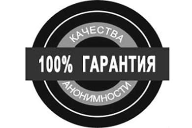
Конфиденциальность доставки закиси азота
15.07.19
В связи с тем, что отношение к пищевой закиси азота и ее употреблению в обществе сегодня неоправданно неоднозначное – некоторые поклонники этого газа хотят, чтобы продукт был доставлен максимально конфиденциально, и на то есть ряд причин. Веселящий газ легален, его доставка, покупка, обмен, хранение и употребление законом не запрещены, но сегодня зачастую к тем, кто употребляет газ относятся достаточно странно.
Подробнее
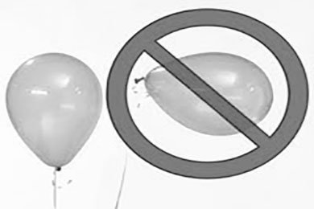
Кому нужен запрет на веселящий газ в России
09.07.19
Уже с момента своего появления около полутора веков назад веселящий газ имел своих противников и почитателей, тех людей, которые говорили о том, что пищевая закись азота положительно влияет на организм, а также на тех, кто говорил, что она вредна, а ее употребление грозит всяческими негативными последствиями. Вот, собственно, прошло полтора века и споры на эту тему не утихли, а наоборот обострились вместе с новой волной популярности веселящего газа.
Подробнее
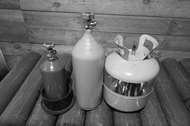
Виды баллонов веселящего газа
28.06.19
Любой газ продается в баллонах, а веселящий для удобства употребления распределяется по шарикам. Но баллоны могут быть разными как по типу, так и по объему, давайте подробнее разберемся с данным вопросом, ведь от него зависит понимание того, сколько шариков можно наполнить одним и другим, какой лучше выбрать и чем они отличаются в принципе. Начать нужно с более понятного – с объема.
Подробнее
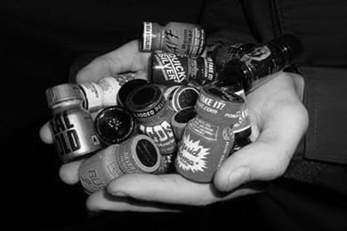
Попперсы как способ получения новых ощущений
27.06.19
Во все времена мужская сила и женское либидо ценилось противоположным полом, а новые и яркие ощущения от секса были чуть ли не мечтой каждого. Сегодня, когда секс не является чем-то запретным к обсуждению или табу в обществе – появилась целая индустрия интимных товаров, начиная от гелей, смазок и всевозможных добавок до полноценных имитаторов мужского или женского тела.
Подробнее
Пищевая закись азота в клубах
27.05.19
Веселящий газ в ночных клубах Москвы и ближайшего Подмосковья появился достаточно давно – уже в 2009 году самые крутые и модные заведения столицы предлагали посетителям веселящие шарики. Но на полную катушку этот вариант отдыха раскрутился не сразу, можно сказать точно, что понадобилось еще лет пять для настоящего ажиотажного спроса на такой вариант отдыха, как веселящий газ.
Подробнее
Кто против веселящего газа
30.05.19
Сегодня все чаще во всевозможных источниках СМИ появляются новости о том, что веселящий газ вреден, его надо запретить, поскольку люди под ним становятся неадекватными, совершают противоправные действия или вовсе умирают от передозировки. Это все достаточно интересно слушать, особенно зная правду, а она такова, что все это совершается под действием алкоголя или еще чего похуже, неадекватными лицами и просто хулиганами.
Подробнее
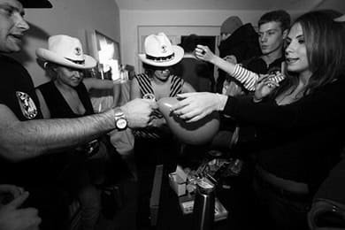
Веселящий газ в кальянных
24.05.19
Воздух Ибицы уже почти 10 лет – это прерогатива ночных клубов, тусовок и прочих ночных заведений, но относительно недавно его начали продавать и в кальянных, где веселящий газ был не совсем очевидным гостем. Но все поменялось, когда кальянные стали лаундж-зонами, созданными больше для расслабления и отдыха от активной тусовки. Именно с этого времени пищевая закись азота в шариках и распространилась по многим кальянным Москвы и даже кое-где и вовсе стала «основным блюдом».
Подробнее